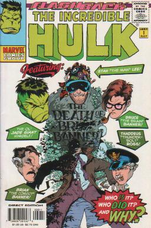
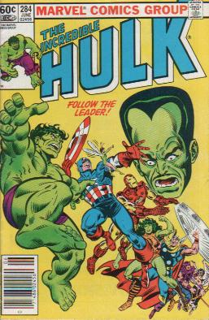

|
|
Comics of the
Incredible Hulk vol. 2 #312- flashback- Brian Banner is freaking out and harassing the nurses as his wife Rebecca screams from the pain of childbirth. Brian stresses that his wife should be saved first, and then thinks to himself that he wishes he had brought a bottle with him. Brian watches as they open his wife and take out his baby. Brian realizes that all those years of atomic research must have altered his genetic structure and wishes that he hadn't been talked into having children. Months later Brian resents the time Rebecca devotes to her son Bruce. Brian and Rebecca go out leaving Bruce with a nurse.
Incredible Hulk vol. 2 #284- Omnivac is forced to tell Hulk that the organ activates the time machine. When they disappear Omnivac decides that maybe he can still serve his master by making sure Hulk and She-Hulk can never return. After Hulk and She-Hulk find all the other Avengers they are brought to the beginning of man's evolution. There they find Captain Marvel and Wasp in the Leader's thrall. Captain Marvel stands besides the Leader on top of a volcano. She is emitting immense gamma radiation. She-Hulk grabs the Wasp, and the other Avengers charge at Leader. Captain America throws his shield and hits Leader in the chest. As Leader falls backwards into the volcano he shouts, "What's wrong with being like me?" Iron Man tries to save Leader, but admits to himself that he might not have tried real hard. Omnivac seems to be following commands from Jackdaw.
RETURN TO THE HULK'S INTRODUCTION PAGE
|